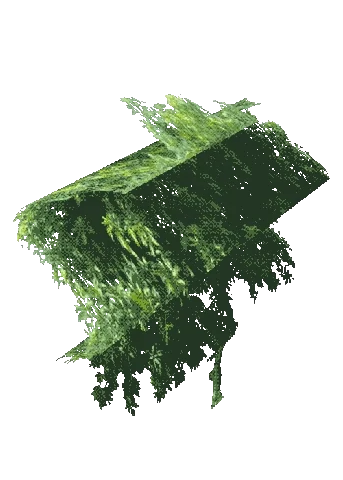
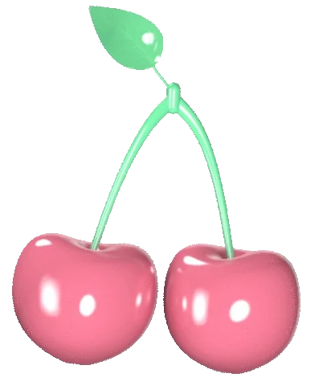
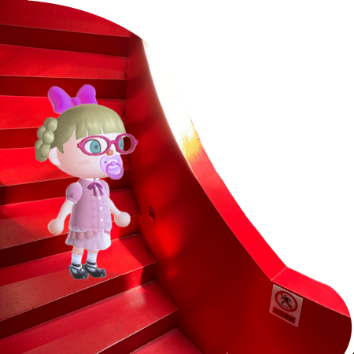
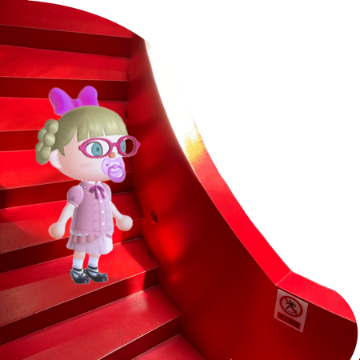

Above all, you must illumine your own soul with its profundities and its shallows, and its vanities and its generosities, and say what your beauty means to you or your plainness, and what is your relation to the ever-changing and turning world of gloves and shoes and stuffs swaying up and down among the faint scents that come through chemists' bottles down arcades of dress material over a floor of pseudo-marble.
But, you may say, we asked you to speak about women and fiction--what has that got to do with a room of one's own? I will try to explain.
When you asked me to speak about women and fiction I sat down on the banks of a river and began to wonder what the words meant. They might mean simply a few remarks about Fanny Burney; a few more about Jane Austen; a tribute to the Brontë and a sketch of Haworth Parsonage under snow; some witticisms if possible about Miss Mitford; a respectful allusion to George Eliot; a reference to Mrs. Gaskell and one would have done. But at second sight the words seemed not so simple. The title women and fiction might mean, and you may have meant it to mean, women and what they are like; or it might mean women and the fiction that they write; or it might mean women and the fiction that is written about them; or it might mean that somehow all three are inextricably mixed together and you want me to consider them in that light.
But when I began to consider the subject in this last way, which seemed the most interesting, I soon saw that it had one fatal drawback. I should never be able to come to a conclusion. I should never be able to fulfil what is, I understand, the first duty of a lecturer--to hand you after an hour's discourse a nugget of pure truth to wrap up between the pages of your notebooks and keep on the mantelpiece for ever. All I could do was to offer you an opinion upon one minor point--a woman must have money and a room of her own if she is to write fiction; and that, as you will see, leaves the great problem of the true nature of woman and the true nature of fiction unsolved. I have shirked the duty of coming to a conclusion upon these two questions--women and fiction remain, so far as I am concerned, unsolved problems. But in order to make some amends I am going to do what I can to show you how I arrived at this opinion about the room and the money. I am going to develop in your presence as fully and freely as I can the train of thought which led me to think this. Perhaps if I lay bare the ideas, the prejudices, that lie behind this statement you will find that they have some bearing upon women and some upon fiction. At any rate, when a subject is highly controversial--and any question about sex is that--one cannot hope to tell the truth. One can only show how one came to hold whatever opinion one does hold. One can only give one's audience the chance of drawing their own conclusions as they observe the limitations, the prejudices, the idiosyncrasies of the speaker. Fiction here is likely to contain more truth than fact. Therefore I propose, making use of all the liberties and licences of a novelist, to tell you the story of the two days that preceded my coming here--how, bowed down by the weight of the subject which you have laid upon my shoulders, I pondered it, and made it work in and out of my daily life. I need not say that what I am about to describe has no existence; Oxbridge is an invention; so is Fernham; "I" is only a convenient term for somebody who has no real being. Lies will flow from my lips, but there may perhaps be some truth mixed up with them; it is for you to seek out this truth and to decide whether any part of it is worth keeping. If not, you will of course throw the whole of it into the waste-paper basket and forget all about it.
When you asked me to speak about women and fiction I sat down on the banks of a river and began to wonder what the words meant. They might mean simply a few remarks about Fanny Burney; a few more about Jane Austen; a tribute to the Brontë and a sketch of Haworth Parsonage under snow; some witticisms if possible about Miss Mitford; a respectful allusion to George Eliot; a reference to Mrs. Gaskell and one would have done. But at second sight the words seemed not so simple. The title women and fiction might mean, and you may have meant it to mean, women and what they are like; or it might mean women and the fiction that they write; or it might mean women and the fiction that is written about them; or it might mean that somehow all three are inextricably mixed together and you want me to consider them in that light.
But when I began to consider the subject in this last way, which seemed the most interesting, I soon saw that it had one fatal drawback. I should never be able to come to a conclusion. I should never be able to fulfil what is, I understand, the first duty of a lecturer--to hand you after an hour's discourse a nugget of pure truth to wrap up between the pages of your notebooks and keep on the mantelpiece for ever. All I could do was to offer you an opinion upon one minor point--a woman must have money and a room of her own if she is to write fiction; and that, as you will see, leaves the great problem of the true nature of woman and the true nature of fiction unsolved. I have shirked the duty of coming to a conclusion upon these two questions--women and fiction remain, so far as I am concerned, unsolved problems. But in order to make some amends I am going to do what I can to show you how I arrived at this opinion about the room and the money. I am going to develop in your presence as fully and freely as I can the train of thought which led me to think this. Perhaps if I lay bare the ideas, the prejudices, that lie behind this statement you will find that they have some bearing upon women and some upon fiction. At any rate, when a subject is highly controversial--and any question about sex is that--one cannot hope to tell the truth. One can only show how one came to hold whatever opinion one does hold. One can only give one's audience the chance of drawing their own conclusions as they observe the limitations, the prejudices, the idiosyncrasies of the speaker. Fiction here is likely to contain more truth than fact. Therefore I propose, making use of all the liberties and licences of a novelist, to tell you the story of the two days that preceded my coming here--how, bowed down by the weight of the subject which you have laid upon my shoulders, I pondered it, and made it work in and out of my daily life. I need not say that what I am about to describe has no existence; Oxbridge is an invention; so is Fernham; "I" is only a convenient term for somebody who has no real being. Lies will flow from my lips, but there may perhaps be some truth mixed up with them; it is for you to seek out this truth and to decide whether any part of it is worth keeping. If not, you will of course throw the whole of it into the waste-paper basket and forget all about it.
Here then was I (call me Mary Beton, Mary Seton, Mary Carmichael or by any name you please--it is not a matter of any importance) sitting on the banks of a river a week or two ago in fine October weather, lost in thought. That collar I have spoken of, women and fiction, the need of coming to some conclusion on a subject that raises all sorts of prejudices and passions, bowed my head to the ground. To the right and left bushes of some sort, golden and crimson, glowed with the colour, even it seemed burnt with the heat, of fire. On the further bank the willows wept in perpetual lamentation, their hair about their shoulders. The river reflected whatever it chose of sky and bridge and burning tree, and when the undergraduate had oared his boat through the reflections they closed again, completely, as if he had never been. There one might have sat the clock round lost in thought. Thought--to call it by a prouder name than it deserved--had let its line down into the stream. It swayed, minute after minute, hither and thither among the reflections and the weeds, letting the water lift it and sink it, until--you know the little tug--the sudden conglomeration of an idea at the end of one's line: and then the cautious hauling of it in, and the careful laying of it out? Alas, laid on the grass how small, how insignificant this thought of mine looked; the sort of fish that a good fisherman puts back into the water so that it may grow fatter and be one day worth cooking and eating. I will not trouble you with that thought now, though if you look carefully you may find it for yourselves in the course of what I am going to say.
Hi, see--here's the question.


 

Olivia.Song